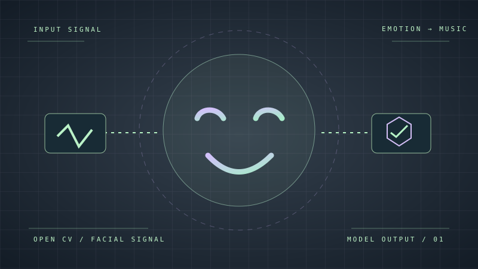

01 / COMMUNITY↗
✳
IEEE CT Society
Served as Secretary of the IEEE Consumer Technology Society, building experience in coordination and leadership.
LEADERSHIP · COLLABORATION
HELLO, I'M
Turning curiosity into thoughtful software — from intelligent computer vision to full-stack experiences people can actually use.
ABOUT ME
I'm a Computer Science & Engineering student who enjoys the intersection of software engineering, human-centered experiences, and intelligent systems.
My work ranges from building accessible computer-vision tools to designing REST APIs and full-stack navigation experiences. I like understanding the entire system: where the data comes from, how the pieces fit together, and why the end result matters.
Currently pursuing my B.E. at RNS Institute of Technology, Bengaluru, and always learning by shipping, debugging, and collaborating.
The journey so farSYSTEM WALKTHROUGH
A conceptual, interactive view of the pipeline behind MoodSync-AI — an emotion-aware music recommendation project.
The React interface captures a webcam frame as the starting point for detecting facial emotion.
Good products don't stop at prediction. They connect input, processing, a useful decision, and a clear user experience.
PROJECT ARCHIVE / 2025—26
Four builds across AI, accessibility, navigation and frontend engineering. Explore how they work, not just how they look.

Emotion-aware music recommendations powered by computer vision, deep learning, and a React-to-FastAPI application.
Translate a webcam emotion signal into a meaningful, personalized listening experience.
Connect OpenCV and a TensorFlow/Keras model to REST APIs and a React frontend.
Community, coursework and exploration that shape the work.
Served as Secretary of the IEEE Consumer Technology Society, building experience in coordination and leadership.
Practiced Python, algorithms, and problem solving through Samsung Innovation Campus and coding challenges.
Completed IIT Madras's NPTEL course covering TCP/IP, routing, switching, and network fundamentals.
HAVE A QUESTION?
Ask about the projects, the stack, experience, or the kinds of work I enjoy. Try a prompt below or write your own.
A WORKING MINDSET
Great software starts with a clear question and gets better through testing, iteration, and collaboration.
Define the user need, map the workflow, and make the real problem clear before choosing tools.
Design the components, write the APIs, train or connect the models, and keep the experience intuitive.
Test real workflows, debug rough edges, measure what matters, and iterate with feedback.
EXPERIENCE & EDUCATION
Learning through hands-on projects, technical training, coursework, and community involvement.
B.E. · Computer Science & Engineering
CGPA 9.49 / 10Developing a webcam-based emotion detection and music recommendation app using React, FastAPI, OpenCV and TensorFlow/Keras.
Student trainee focused on Python, data structures and algorithms, competitive programming, and structured software challenges.
Secretary, IEEE Consumer Technology Society; member, Google Developer Student Clubs (GDSC).
RNS Institute of Technology, Bengaluru. Coursework foundation in programming, data structures, software engineering and databases.
THINGS I WORK WITH
A mix of languages, frontend and backend technologies, machine learning tools, and engineering fundamentals.
Languages I use to think through problems, write applications, and explore new ideas.
THE NEXT CONVERSATION
I'm open to software engineering opportunities, meaningful collaborations, and conversations about tech worth building.
ranjithasgowda245@gmail.com ↗